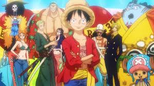

The Legendary Straw Hat Crew
Meet the fearless adventurers of the Grand Line! Each Straw Hat Pirate brings unique skills, quirks, and dreams that make this crew one of a kind. Together, they chase the ultimate treasure, the One Piece!

- Luffy: Captain and aspiring Pirate King. A fearless leader with a love for adventure and an insatiable appetite.
- Zoro: Swordsman with unmatched skills. A master of the three-sword style and a loyal warrior with a poor sense of direction.
- Nami: Navigator and cartographer. Her sharp mind and love for treasure guide the crew through dangerous seas.
- Usopp: Marksman and storyteller. The crew's sniper and comic relief, always armed with creativity and courage.
- Sanji: Chef with deadly kicks. A culinary genius and chivalrous fighter with a flair for romance.
- Chopper: Doctor with a kind heart. A reindeer with medical expertise and a loveable personality.
- Robin: Archaeologist seeking the truth of the Void Century. Wise, calm, and mysterious, she's the key to uncovering history's secrets.
- Franky: Shipwright and cyborg innovator. An eccentric genius who built the crew's ship, the Thousand Sunny.
- Brook: Musician with a bone-chilling laugh. A soulful skeleton who brings joy through music and swordsmanship.
- Jinbe: Helmsman and Fishman Karate master. A seasoned warrior with a strong sense of honor and calm wisdom.